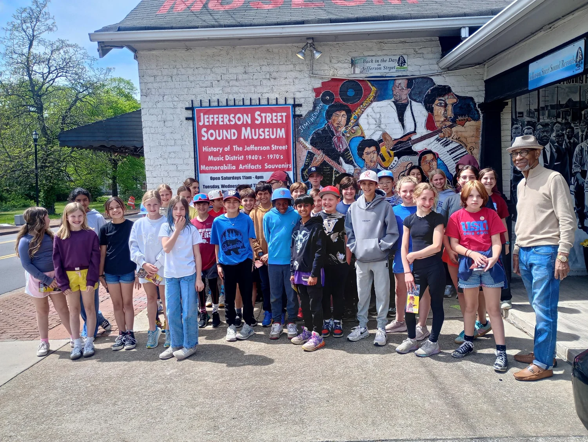

Education in the grooves
A museum built for conversation.
Jefferson Street Sound Museum welcomes students and visitors from across Nashville and around the world. Tours connect the objects in the collection with the people, choices and communities behind them.
School groups encounter a wider story of Music City—one that centers Black creativity, neighborhood entrepreneurship and the relationship between music and the Civil Rights Movement.
Student tours
Age-appropriate stories, artifacts and discussion for school and university groups.
Jefferson Street ambassadors
Visitors leave ready to carry this history into their own schools, cities and creative work.
Programs and events
Community gatherings bridge the neighborhood’s musical past with the artists of today.